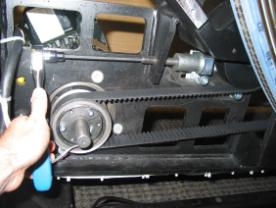

Proprietary to General Electric
Direction 5196839-800, Rev# 6
RT16 and Xtra Service Info Adv
Proprietary to General Electric |
| Required Persons | Preliminary Reqs | Procedure | Finalization |
|---|---|---|---|
| 1 | 30 mins | 60 mins | 20 mins |
During deceleration from .35 sec. scans, VCT above-grade installations are seeing high gantry vibrations. Engineering testing shows that belt tension has a significant impact on deceleration vibration. Increasing belt tension from 300N to 500 – 600N decreases vibration by approximately 40%. The desired outcome of this procedure is to achieve 500 - 600N belt tension.
| Last Revised on: | October 1, 2008 |
| Item | Qty | Effectivity | Part# | Manufacturer | |
|---|---|---|---|---|---|
| Microphone (Refer to “Required Conditions”.) | 1 | - | 5224640 | - | |
| Belt Tension Measurement CD (Refer to “Required Conditions”.) | 1 | - | 5220799 | - | |
| Standard FE Tool Kit | 1 | - | - | - | |
| FE Laptop | 1 | - | - | - | |
| Torque Wrench | 1 | - | - | - | |
| Condition | Reference | Eff |
|---|---|---|
Microphone must be condenser type for use with a standard FE laptop. (Noise canceling microphones may not be used for this task.) Use Microphone part #5224640 with standard FE laptop for best results. | - | - |
The program BFreq1_4.exe is required. It can be acquired two ways: By acquiring media disk “Belt Frequency Measurement Class C Software” (PN# 5220799). (Preferred method). For GE Healthcare personnel only: From “Downloads” link (left side of screen) on the MI&CT Service Engineering website. (Alternate method). | - | - |
Remove gantry right side cover.
Refer to Parts Replacement → Gantry → Enclosure → (Cover Removal Procedures).
Turn OFF the Axial Drive, HVDC and 120 VAC switches on the gantry’s Service Switch Panel.
Remove the gantry left side cover, top covers, scan window and rear cover. Connect the rear cover E-Stop cable per instructions in cover removal to allow gantry rotation later in the procedure.
Perform procedure in Setup Microphone and Belt Frequency Tool (Adv).
Turn on gantry 120 VAC service switch from the service switch panel to allow gantry to rotate easily. Leave the Axial drive switch OFF.
Position tube at 0 degrees (tube at top most position) while rotating by hand in the clockwise direction.
| NOTE: | Always rotate the gantry in the CW direction when checking the tension of the belt. Rotating CW and then CCW will relieve the belt tension and give inaccurate measurements. |
With the microphone connected to the laptop/PC and the Belt Frequency Tool running as setup in Setup Microphone and Belt Frequency Tool, go to the gantry axial drive belt upper span near the spring tensioner assembly. Position the microphone in the middle of the upper span of the belt. Position the microphone so that it is approximately 1” away from the front of the belt without touching the belt. Position the laptop/PC so that you can see the belt tension program running.
Lightly strum the belt (like a guitar string) while holding the microphone 1” away from the middle section of the belt. Time it so that you strum the belt immediately after a new “Acquiring data” line is written by the program. The belt frequency will be reported by the program.
| NOTE: | If you do not time the measurement immediately after the “Acquiring data” line is written the results may not be reported accurately. If you continuously report “No Trigger” then strum the belt harder, move the microphone closer to the belt, or turn up your microphone volume. If you continuously report “OVERLOAD” then strum the belt softer, move the microphone away from the belt, or turn down your microphone volume. Minimize external noise as much as possible while taking measurements. Ignore false/odd readings which are most likely due to background noises fooling the program. Continue taking measurements until repeatable results are achieved. |
Take measurements with the tube positioned at 0, 90, 180, 270 degrees and record. Measurements at each tube position must be within 85 – 102 Hz which corresponds to 450 – 650 N belt tension. Average the four readings. The average must be within 89 – 98 Hz which corresponds to 500 – 600 N belt tension.
If readings are not within spec, go to Adjusting Belt Tension and adjust belt tension. If readings are within spec, go to Finalization section in this procedure.
To unlock the tensioner assembly, loosen the two M12 screws using a 10mm hex key. See Illustration 1.
Adjust the elongated hex screw using a 6mm hex key and a 12 inch extension. Adjust in ¼ turn increments (clockwise tightens the belt). See Illustration 1.
Illustration 1: Adjust Elongated Hex Screw

Torque the two M12 screws to lock the tensioner assembly per Table 1.
Table 1: M12 Screw Torque
| 66 N-m | 50 lb-ft | 580 lb-in | 673 kg-cm |
Rotate the gantry clockwise two turns to even out the belt tension.
Measure the belt frequency again with the tube at 0, 90, 180, 270 degrees. Continue to adjust belt and take readings until measurements are within spec.
From the Common Service Desktop, Diagnostics Menu, start the Axial Functional Diagnostic.
Select open loop rotation, 0.35 second gantry speed.
Run the test a few times and verify that deceleration noise is acceptable.
Verify that belt tension measurement is still 89 – 98 Hz.
To stop the program running on your laptop/PC, hit <Enter> a couple of times
Install the gantry rear, top and right side covers.
Refer to Parts Replacement → Gantry → Enclosure → (Cover Procedures).
Enable 120 VAC HVDC and Axial Drive service switches from the service switch panel. Press the table drives enable button on the lower right corner of the service switch panel.
Install the gantry right side cover.